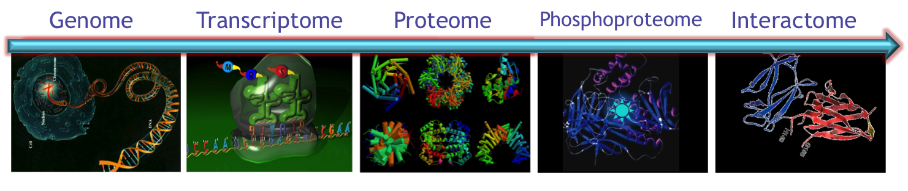
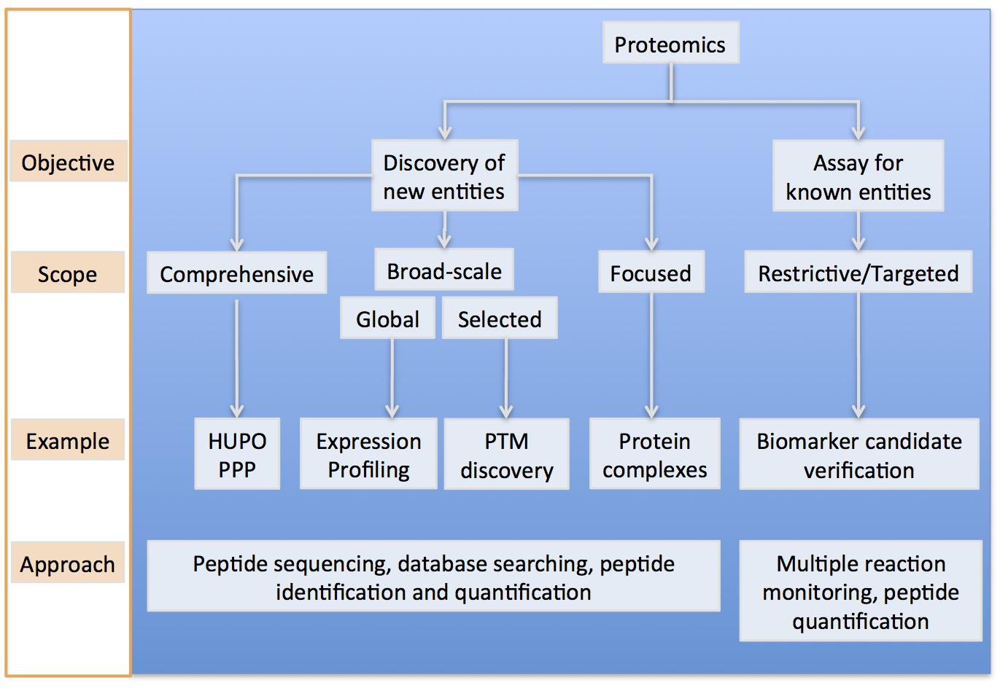

overview
Life is a relationship among molecules and not a property of any molecule
—Linus Pauling
The Mallick lab translates multi-omic discovery into precision diagnostics. We use integrated computational and experimental approaches to understand how cells behave — and misbehave — and how diseases like cancer and Alzheimer's develop and progress. By formalizing this understanding in predictive mathematical models, we aim to identify biomarkers that detect disease earlier and describe how it will behave: aggressive vs. indolent, drug sensitive vs. resistant.
We work in three focus areas. In Systems Biology, we study the processes driving tumor evolution and the tumor microenvironment, including how microenvironmental heterogeneity creates drug-resistant niches, and the multi-omic regulatory mechanisms underlying acquired resistance. In Multi-scale Biomarker Biology, we build models connecting tumor biology to circulating biomarkers, guiding more rational, principled biomarker discovery for early detection and prediction of therapeutic response. In Foundational Methods and AI, we build physics-based, interpretable AI — including the Prospector Head architecture — that incorporates prior knowledge into model design so models can train on realistic amounts of biomedical data while remaining human-interpretable. We also develop and maintain open-source tools, including ProteoWizard, DISK, and SpellBook, supporting reproducible multi-omic analysis across the field.
Many of our studies investigate fundamental physiological processes and are broadly applicable across cell types and diseases, spanning oncology, neurodegeneration, and autoimmune and infectious disease.

Cancer Systems Biology: What are the control systems underlying cells' decisions to be good, bad or otherwise and how do they work?
Lay Summary:
Control systems are prevalent throughout our daily world. For example, your car's accelerator, brakes and steering wheel are key control systems responsible for regulating how fast your car goes and helping you get where you want to go. Bad things happen when these control systems malfunction. Imagine trying to drive (responsibly) with your throttle on overdrive, no brakes. and a steering wheel stuck turned all the way to the right - badness. Just like a driver in traffic, each cell in your body is constantly taking in input from its surroundings and using its own internal control systems to determine whether to grow faster, to move, to die, etc. Cancer is often described as a disease in which a rogue cell grows uncontrollably. It is hypothesized that this occurs from inappropriate functioning of cellular control systems. Our group is interested in understanding how these control systems function (and dysfunction!).
Research Summary:
Cancers are believed to arise from series of mutations in specific proteins, which manifest their activities in cellular, morphologic and tissue changes (e.g., alterations in multi-cell growth dynamics). Our group is interested in developing approaches to accurately describe and subsequently predict how cells are likely to behave after either innate or exogenous perturbations, such as genetic alterations, chemotherapies, pathway targeted drugs, environmental cues, or signals from adjacent cells. Ideally, it would be possible to map from a small set of inputs { genetic background of a cell, environmental context } to a small set of outputs { cell physiology, cell state, likelihood of state change}. This objective is predicated on the confounding observation that many of the measurable changes in a cell at the molecular level are likely to be insignificant from the perspective of the tumor (due to the redundancy and extreme robustness of cellular networks) and the related observation that small numbers of molecular-scale perturbations (e.g. mutation in a gene) can produce dramatic, tumor-scale (e.g. invasiveness) and organism scale (e.g. positive outcome) affects. It is important to note, that a key component of cells behavior is driven not only by chemical factor, but also by mechanical factors.
We hypothesize the complexity of the cell’s molecular processes can be collapsed by an appropriate model from its current de-facto description (as values or rates of changes of values of each component in a cell) into equivalence classes of cellular behavior that relate to significant alterations in cell physiology. Such models necessarily require addressing a number of complex challenges including mapping from molecular measurements to cell states, integrating multi-omics data, modeling the molecular regulatory and interaction networks within each cell, and developing novel approaches to measure cell phenotypic properties.
A better understanding of the mechanistic consequences of genetic mutations on biochemical function and systems-level functioning would inform predictive models for cancer cell behavior including initiation, progression and therapeutic response. As cells operate in the context of a complex multi-cellular system, it becomes important to understand how variables from the larger system affect each cell (and the dynamics and time scales of such effects). For example, it is known that microenvironmental factors like the delivery of oxygen to the cells in a tumor varies with proximity to blood supply; appropriate mathematical models might be able to answer questions like “Given this gradient of nutrients, what is the expected change in behavior of these cells?”.
We most typically work in Non-Small Cell Lung Cancer, Burkitt's Lymphoma, Prostate Cancer and Pancreatic Cancer Model Systems.
Keywords: Systems Biology, Complex Systems, Integrated Omics, Cellular Biomechanics, Tumor Microenvironment, Tumor Evolution.

Biomarker Biology : What are the biological processes that give rise to circulating or imaging biomarkers?
Lay Summary:
When diagnosed in stage I, the cure rate for most cancers can approach 90%. Unfortunately, less than 25% of cancers are detected at stage I. Even when correctly diagnosed, treatment strategies are complex. We hope that the routine use of low-cost, minimally invasive strategies that measure either circulating or imaging biomarkers will improve outcomes and reduce healthcare costs by enabling earlier diagnosis, and more effective treatment that evolves with the disease.
Given the significant interest in developing clinically viable biomarker-based tools, we aim to improve our understanding of the biology that leads some analytes to be excellent biomarkers and other analytes to be undetectable or poorly predictive.
Research Summary:
Researchers have attempted numerous approaches to discover biomarkers, ranging from decades-old immunology, to modern, high-throughput “-omics”. Despite thousands of publications highlighting putative candidates, very few biomarkers are being used clinically. Initially, a number of technical issues (e.g., sample collection, process reproducibility, etc.) plagued discovery efforts. The general belief was that if enough proteins could be robustly quantified in samples taken from healthy and disease-affected groups, biomarkers could be simply identified as the analytes with large group-wise differences in abundance. More recently, research on improving the robustness of measurement platforms has highlighted a more significant challenge: biology. Studies listing hundreds of putative markers have made it clear that a theoretical foundation for interpreting findings and measuring progress is missing from the field of biomarker research. Theoretical frameworks supporting cancer biomarker studies are largely absent. We propose to make contributions to this foundation through studying the processes by which proteins traverse from the tumor into the circulation. We perform these studies by using broadscale profiling methods and then developing formal mathematical models of the processes at work including tumor vascularization, protein turnover, tumor shedding and physiologic background.
Keywords: Biomarkers, Protein turnover, Tumor shedding, Multiscale Modeling.

Technology Development
Lay Summary:
Proteomics provides a complementary approach to genomic technologies by en masse interrogation of biological phenomena on the protein level. Mass-spectrometry-based proteomics has become an important component of biological research. Numerous proteomics methods have been developed to identify and quantify the proteins in biological and clinical samples1, identify pathways affected by endogenous. These technologies are quite broad, but still in the prototype phase of development. We are actively working to improve the throughput, sensitivity and robustness of these technologies to improve their capability to routinely and effectively interrogate biological samples. In addition to proteomics approaches, we are also working with a diverse community of investigators to develop microfluidic platforms to interrogate cells at the single-cell level for their molecular and biomechnical properties.
Research Summary:
We are working on diverse approaches to better interrogate biological systems. One particularly large area of study for our group is in proteome informatics. Mass-spectrometry-based proteomics has become an important component of biological research. Numerous proteomics methods have been developed to identify and quantify the proteins in biological and clinical samples, identify pathways affected by endogenous and exogenous perturbations, and characterize protein complexes. Despite successes, the interpretation of vast proteomics datasets remains a challenge. There have been several calls for improvements and standardization of proteomics data analysis frameworks, as well as for an application-programming interface for proteomics data access. In response, we have developed the ProteoWizard Toolkit, a robust set of open-source, software libraries and applications designed to facilitate proteomics research. The libraries implement the first-ever, non-commercial, unified data access interface for proteomics, bridging field-standard open formats and all common vendor formats. In addition, diverse software classes enable rapid development of vendor-agnostic proteomics software. Additionally, ProteoWizard projects and applications, building upon the core libraries, are becoming standard tools for enabling significant proteomics inquiries.
Keywords: Proteome Informatics, ProteoWizard, Proteomics Workflows, Signal Processing.